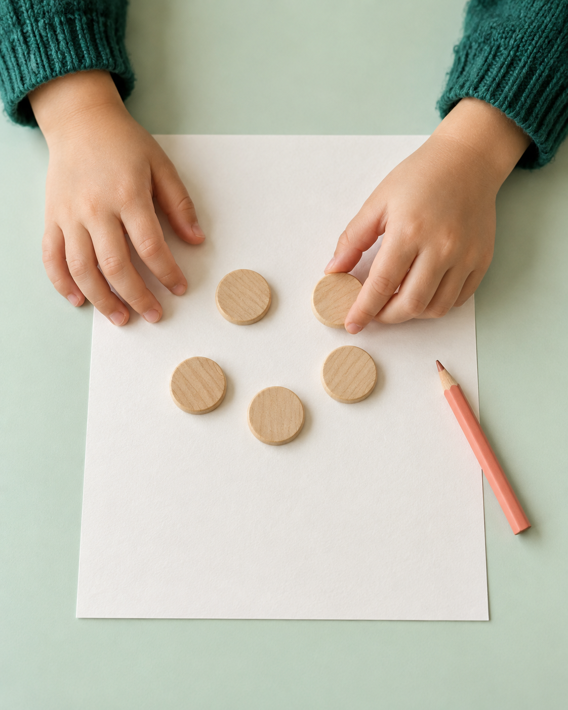

Paper-First
Count, draw, and discover with printable math activities. Children learn on paper, while AI works behind the scenes.
LITTLE HANDS. BIG POSSIBILITIES.
It starts with ink on paper. Inksmore adapts early math practice to each child’s growing skills—with ANGI, our adaptive learning engine, guiding what comes next.
Math for ages 2–6Free during early access

A little more wonder, every day.THE INKSMORE STORY
A little perspective.
Choose a paper to keep exploring.